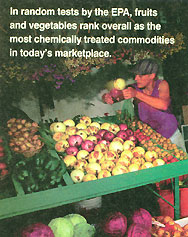

Your average apple doesn't come with an ingredients list, but if it did, you'd need a degree in chemistry to read it. Azinphos-methyl, carbaryl, chlorpyrifos, endosulfan, thiabendazole: these are just a few of the dozens of pesticides detected on red, raw apples by the Food and Drug Administration (FDA) as part of its ongoing Total Diet Study (TDS). Four times a year the FDA goes shopping, buying multiple samples of 261 different food items from supermarkets, grocery stores and fast-food restaurants in alternating geographic regions. Like foods are combined, prepared for the table, then analyzed for pesticide residues, radionucleotides, industrial chemicals and other toxic elements.
Items range from produce, meats and milk to tacos, tuna casserole and commercial chocolate chip cookies. Not surprisingly, fruits and vegetables rank first as the most chemically treated commodities. Perhaps more unexpected is the fact that DDT is the most frequently detected poison-found in a whopping 22% of the foods tested in 1999 - despite a 25-year ban on its use in the U.S. While this notorious organochlorine is still used by some foreign nations, mainly for mosquito control, FDA and EPA officials attribute the prevalence of DDT and its metabolites in our food largely to the pesticide's resilience. Today's crops continue to absorb the remains of the 1,350,000,000 pounds of DDT dumped on U.S. soil during the past 30 years.
The fag.. , another banned organochlorine, shows up in about 14% of our food is further proof of the staying power of these persistent organic pollutants.
Rounding out the top-five offender list are endosulfan, one of only three still legal organochlorines (it comes up for review this year), and two organophosphates: chlorpyrifosmethyl and malathion (see " Chemical Roulette " for more on these pesticides).
In all, 55 pesticides were found in the FDA's 1999 "market baskets," though all were reportedly well below regulatory limits. Current tests can detect residues at 1 part per billion.
Even so, some fruits and veggies stand out for both the variety and sheer number of residues found in their flesh and on their skins. The top ten, in descending order of contamination and based do TDS data for the years 1991 through 1999, are:
1.Apples
2.Collards
3.Green peppers and spinach (tie)
4.Peaches 5.Celery
6.Strawberries
7.Tomatoes
8. White potatoes
9.Cucumbers
10. Sweet cherries
In addition to its Total Diet Study, the FDA also regularly monitors both imported and domestic food items for residue before they enter the market to be sure that producers, both at home and abroad, are complying with pesticide limits set by the EPA. In 1999, the FDA detected pesticide residues on nearly 40% of the domestic foods and 35% of the foreign items tested, though all but about 4% were within EPA safety standards.
Detailed results of the FDA's residue monitoring and market basket studies are available on the Web at http://vm.cfsan.fda.gov .
|
 |
|
|